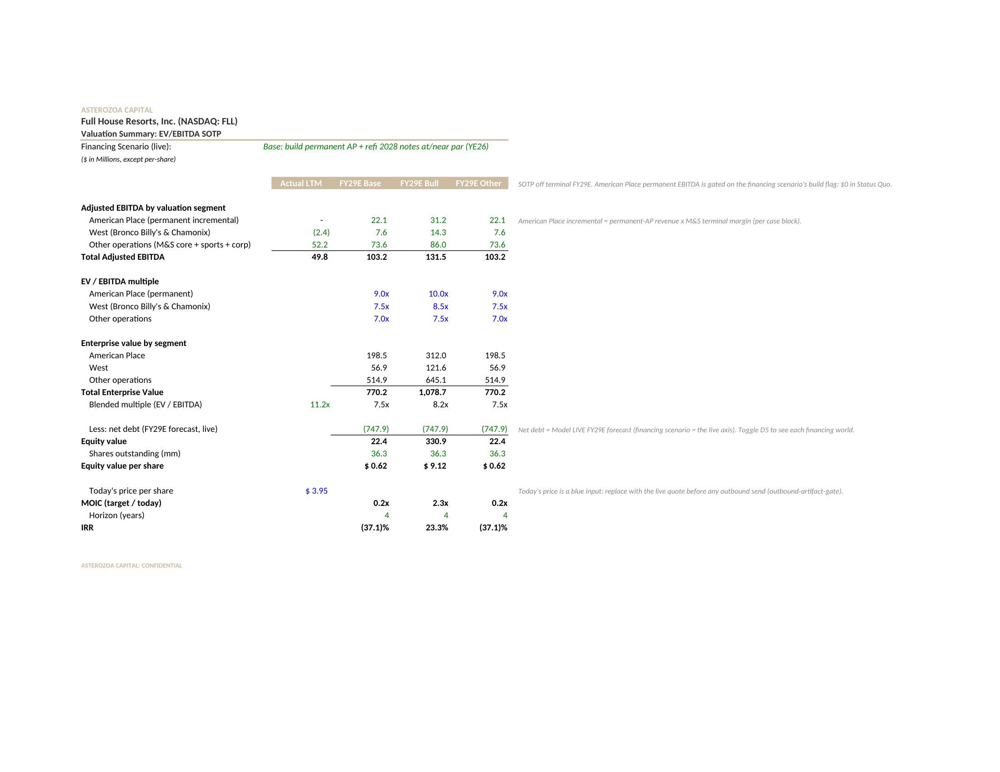
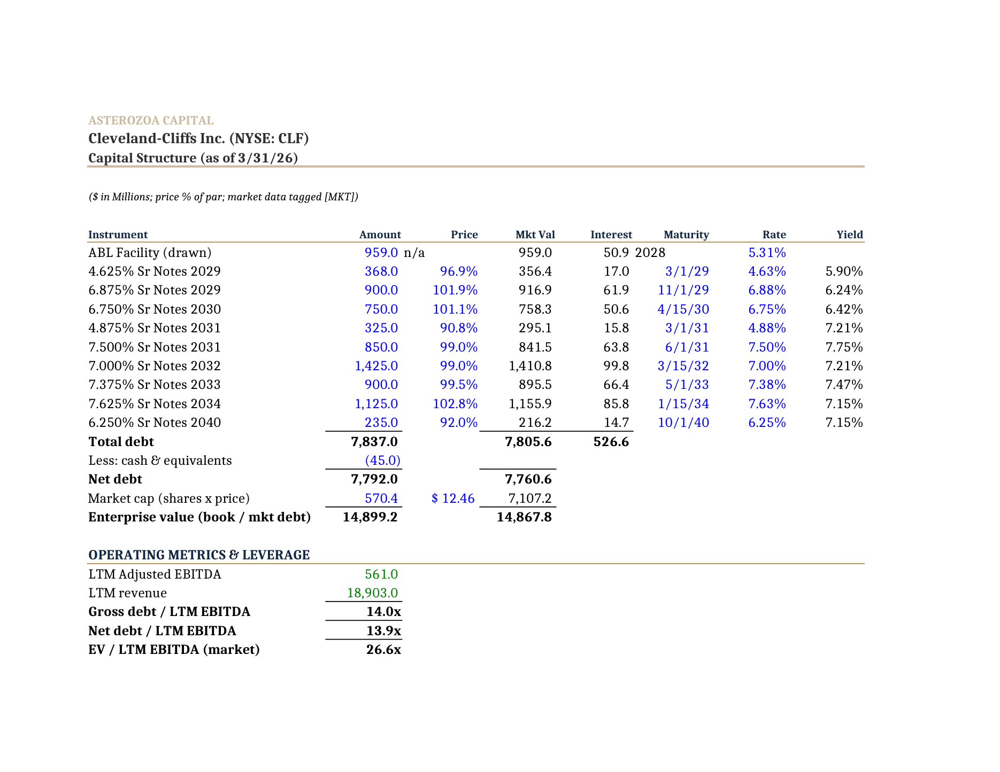

How we surface primary-source research and build institutional models from filings — and how we prove both before they ship.
“Is it more work to check this
than to just do it myself?”
If checking the model costs more than rebuilding it, the model is worthless. So the verification rigor isn’t a feature of the product. The verification rigor IS the product.
In plain terms A model you can’t trust on sight is worse than no model: you have to redo all the math just to believe it. So the real deliverable isn’t the spreadsheet. It’s the proof that the spreadsheet is right.
No template-fill, no copy-paste. Filings drive an engine; the engine builds every tab from primary sources — the company’s own SEC reports.
In plain terms You hand it a stock ticker. It reads the company’s public filings and writes the whole financial model itself — line by line, sourced from those documents. It is not filling in a blank form; it is doing the analyst’s build.
Each one is a working analyst’s habit. Here’s the everyday version of each — then you’ll see it as a real cell.
Like sorting receipts by source: blue = we typed it in from a filing, green = it’s pulled from another tab, black = the sheet calculated it. Any number’s origin is readable at a glance. (The font-color protocol.)
Like a thermostat for the business case: turn one dial — the financing plan, say — and every downstream number updates to match. Assumptions live in one block, never scattered. (Scenario toggles off one assumption block.)
We don’t take the polished profit number on faith — we trace it down to the cash that actually hit the bank. EBITDA (earnings before interest, taxes, depreciation, amortization) is the number management prefers to show; cash from operations is the money that’s really there. (Cash from operations over adjusted EBITDA.)
Like keeping separate bills instead of one lumped total: each loan has its own line, its own due date, its own interest. You can see exactly when each one comes due and what it costs. (Per-instrument debt schedule with day-count interest.)
Same four habits, now made literal: each line of the written spec reliably produces a specific cell you can point at in the workbook. Shown on FLL (Full House Resorts).
Key Assumptions!D5 × D6 drive CHOOSE / Live columns. Flip one cell → 12 coherent worlds.
~0.
91.3¢ on the dollar work out to a 14.33% yield.
We didn’t trust one model to grade its own homework. We made several tear it apart, blind.
Each gate: what it looks for, why it matters. Blocking gates stop the ship; warnings flag for the human.
A deliberately-broken model gets caught and named, gate by gate. That’s the whole point.

Source: note to the exact line in a public SEC filing (FY25 10-K, Q1’26 10-Q). The sample model shipped with the skill was never opened — and an automatic check enforces it: no outside links, a source note on every number.
In plain terms A worse tool tells the analyst what they want to hear. This one says: conservatively there’s little here; the case rests on the optimistic ramp. The multiple and the debt-vs-equity mix are the dials to argue over — which is what a model is for: not a thesis we’re selling, but a trustworthy instrument for the argument.

| Scenario | EBITDA | Equity /sh | MOIC | Debt recovery |
|---|---|---|---|---|
| Downcycle | $753M | — | — | 57% |
| Base | $1,734M | $7.61 | 0.61x | 100% |
| Bull | $2,644M | $21.07 | 1.69x | 100% |
Reading left to right: in a downturn (Downcycle) lenders get only 57¢ on the dollar back — the broken layer of debt, the fulcrum. In Base and Bull the debt is repaid in full. MOIC = multiple of money returned.
The spine of the skill is one architectural decision: ingestion and synthesis are two separate passes. Keeping them apart is what makes the view trustworthy.
In plain terms Read everything first, mark exactly where each fact came from, then and only then form a view. A view built before ingestion finishes contaminates the research with what you wanted to find.
Two orthogonal controls: the source-tier discipline determines how much to trust each number; the output mode selects how much to render.
edgar-only — EDGAR plus company transcripts, zero vendor calls, every fact Tier 1. Switch to full-stack only when financial-data connectors are already authenticated; unauthenticated ones are logged as skipped, never silently replaced with web search. Bloomberg is not in the connector roster by design.
--modeIn plain terms Three passes always run. Mode only controls how much you see at the end — the full read, a compressed executive summary, or a six-line chat drop. Same analysis, different rendering.
A full --mode exec-summary --connectors edgar-only run on Mach Natural Resources LP (NYSE: MNR), followed by a separate adversarial re-pull of every quantitative claim against EDGAR primary sources.
Next — let’s co‑build a real name together.